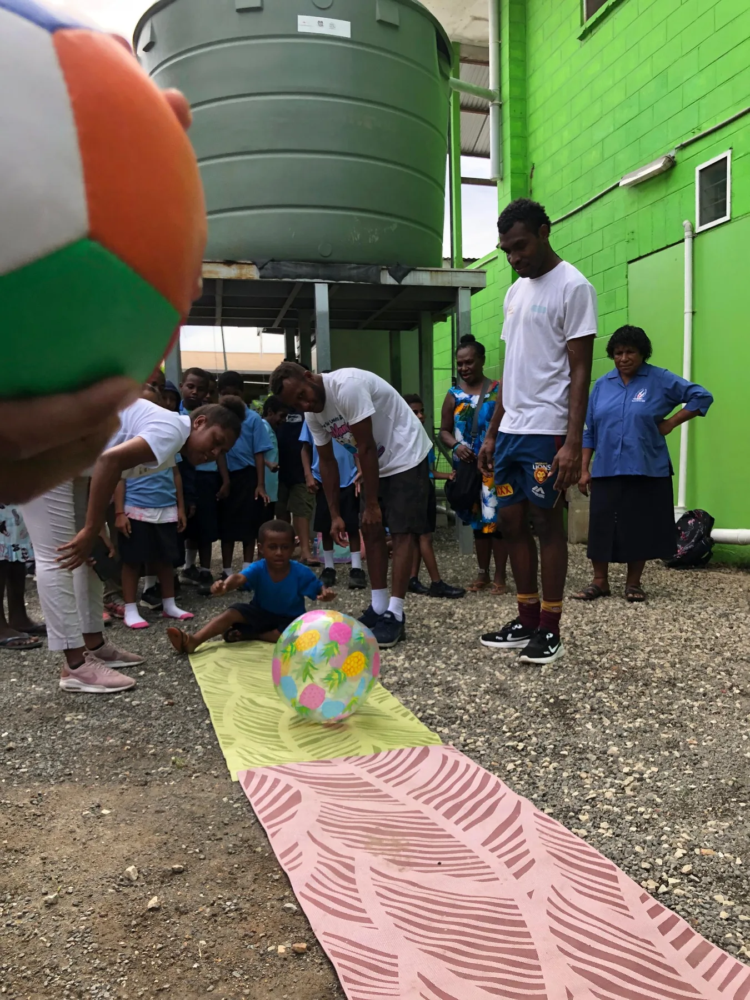
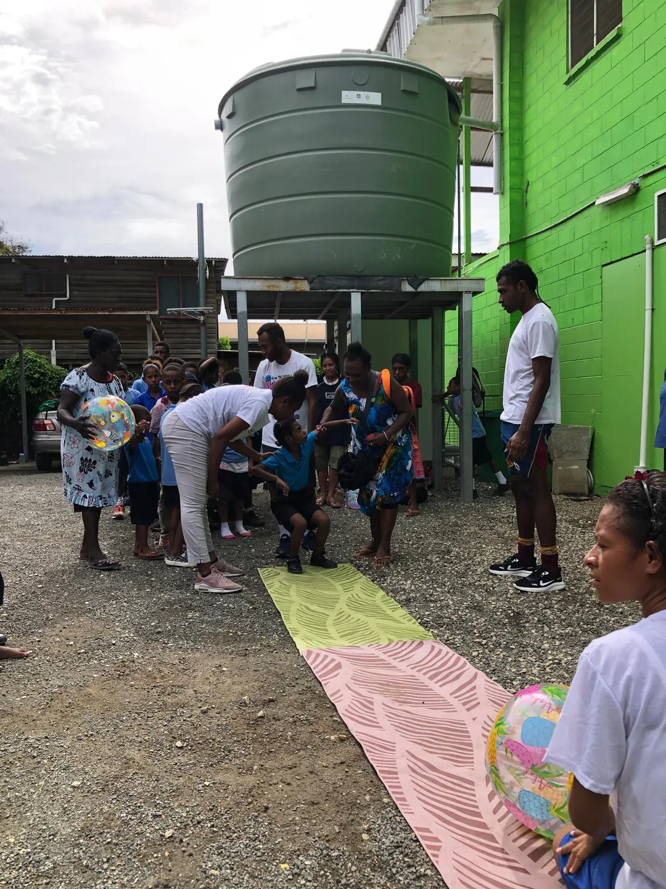

Explore
Try simple movement activities in a welcoming setting.
YOUNG ATHLETES
A playful introduction to movement gives young children room to explore, practice and take part alongside family and community.
Ask about this program

PLAYPLAY · MOVE · DISCOVER
Young Athletes activities use play to explore fundamental movement skills. Children can try at their own pace, with encouragement from families and facilitators.
Try simple movement activities in a welcoming setting.
Build confidence through play and repetition.
Give children and families a shared way to participate.